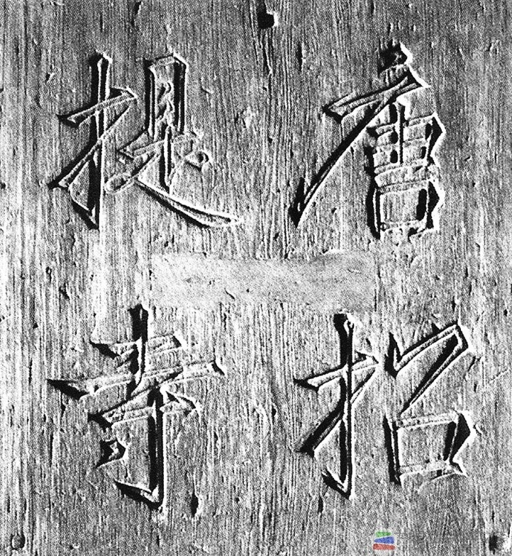

鉴真东渡日本，是唐代中日睦邻航海交往中的重大事件之-、鉴真（688-763年），扬州江阳县（今江苏省扬州）人，俗姓淳于，为唐代著名的高僧。 唐长安二年（702年），鉴真14岁，进扬州大云寺当沙弥，20岁时便崭霹头角。此后，他游历于长安与洛阳，穷究佛教经义，对东邻日本也有所了解，感慨说:“诚是佛法兴隆有缘之国也。”
唐开元元年（713年），鉴真载誉返回扬州，广招弟子4万余众，成为声名遐迩的授戒大师。
唐天宝元年（742年）冬十月，日本遣唐留学僧荣睿、普照至扬州大明寺拜谒鉴真，恳请“大和上东游兴化”，得到概诺。从此，鉴真便坚定地踏上了六次东渡日本的艰难历程。
唐招提寺 日本孝谦天皇御题“唐招提寺”匾额
唐天宝二年(743年)，鉴真第一次东渡，因遭僧人如海密告而未遂。同年十二月，鉴真由扬州出发，顺长江举帆东下，当航抵狼沟浦（今江苏省南通市狼山汇而）时， 遇狂风恶浪，旧船破损，第二次东渡也告流产。修好船后，鉴真等驶到乘名山（今舟山群岛之大衡山），又遇风触礁，被迫弃舟登岸，却被明州地方官软禁于鄮县名刹阿育王寺，第三次东渡又告夭折。
第四次东渡，鉴真计划边传教，边筹资，由福州启航。此事又因其弟子牒告官府而中止。大宝七年(748年)六月，鉴真一行乘船驶出长江，风信不顺，数度抛泊待风。 十月十六日，方趋西南风扬帆东驶，却又遇狂风巨浪，船失控漂荡，最后竟在海南岛登陆，第五次东渡也失败。
鉴真出自日本史
鉴真连续五次航行受阴，们赴日意志益坚。回到扬州后，他不顿双目失明之困，继续准备东渡。 唐天宝十二年(753年)十月十五日，66岁高龄的鉴真应日本遣唐使藤原清河等和留学生阿倍仲麻吕之请，决定再度赴日。 十月二十九日晚，鉴真及弟子等24人，由扬州龙兴寺潜行至江头，迅即登舟启程，出大运河入长江，直趋黄泗浦（今江苏省常熟市黄泗），与日本遣唐使船队会合。 十一月十五口，鉴真一行乘坐的遣唐使船队4舟同发。十一月十六日，船队入东海，即被强劲的东北风吹散，第四船不知去向，存下3艘船只经艰苦航行， 至十一月二十一日先后抵达阿尔奈波岛（今冲绳岛）。十二月六日，海上刮起难得的南风，3船相继启航，第一船触礁，鉴真所乘的第2船经多弥(今日本种子岛)， 于七日到达益救岛（今日本屋久岛）并抛泊候风10天，等待其余二船。十八日，第二船自益救岛续航；鉴真等又饱尝颠簸之苦，于二十日中午， 抵达萨摩国阿多郡的秋妻屋浦（今月本鹿儿岛县川边郡西南的坊津町秋目村）。二十六日，鉴真等一行进入日本太宰府，并于次年(754年)二月一日航达日本遣唐使船队的始发港难波。 自743年起，至754年止，鉴真先后6次东渡日本，终以非凡的信念与顽强的毅力，在中日睦邻航海史上留下了千古美淡。鉴真在日本受到了举国上下的盛大欢迎。 在日本的10年生活中，鉴真授戒讲经，开创了日本的律宗。同时还广泛地传播先进的中华文明。